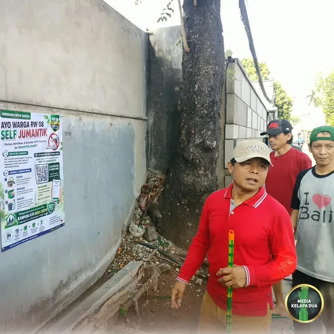

Berita Utama

Kerja Bakti Sambut Verifikasi Lomba Kampung Bebas Jentik Tingkat Provinsi DKI Jakarta
Tanggal, 01 November 2026
MediaKada | Menjelang pelaksanaan verifikasi Lomba Kampung Bebas Jentik (KBJ) Tingkat Provinsi DKI Jakarta, warga RW 08 Kelurahan Kelapa Dua, Kecamatan Kebon Jeruk, Jakarta Barat, menggelar kegiatan kerja bakti pada Minggu (1/11) pagi. Kegiatan ini merupakan bagian dari persiapan menyambut tim verifikasi yang dijadwalkan hadir pada 3 November 2026 di RW 08, sebelum dilanjutkan dengan kegiatan pemaparan di Balai Kota Jakarta pada 11 November 2026.
Keikutsertaan RW 08 Kelurahan Kelapa Dua pada ajang tingkat provinsi tersebut merupakan hasil dari prestasi yang membanggakan, setelah berhasil meraih Juara 1 Lomba Kampung Bebas Jentik Tingkat Kota Administrasi Jakarta Barat. Capaian ini menjadi motivasi bagi seluruh elemen masyarakat untuk terus meningkatkan upaya pemberantasan sarang nyamuk dan menjaga kebersihan lingkungan.
Dalam kegiatan kerja bakti, Pengurus RW 08 bersama Kader Jumantik, warga, serta dibantu personel PPSU Kelurahan Kelapa Dua bergotong royong membersihkan lingkungan. Selain itu, dilakukan pula sosialisasi mengenai Lomba Kampung Bebas Jentik kepada masyarakat serta pemasangan stiker barcode Self Jumantik di rumah-rumah warga sebagai upaya meningkatkan partisipasi masyarakat dalam pemantauan jentik nyamuk secara mandiri.
Kelurahan Kelapa Dua bersama pengurus RW, kader Jumantik, dan warga menggelar kegiatan kerja bakti dalam rangka menjaga kebersihan lingkungan serta mencegah penyebaran penyakit yang disebabkan oleh genangan air. Kegiatan dilakukan di sejumlah titik yang menjadi fokus pemantauan kesehatan lingkungan.
Kegiatan tersebut turut dihadiri oleh Ketua Komisi A DPRD Provinsi DKI Jakarta, Inggard Joshua, S.E., yang juga merupakan warga RW 08 Kelurahan Kelapa Dua. Kehadirannya menjadi bentuk dukungan sekaligus apresiasi atas semangat gotong royong yang ditunjukkan warga dalam mempersiapkan wilayahnya menjelang verifikasi tingkat provinsi.
Antusiasme dan partisipasi aktif masyarakat terlihat dari keterlibatan berbagai unsur warga dalam kerja bakti tersebut. Semangat kebersamaan yang terbangun menjadi modal penting dalam menciptakan lingkungan yang sehat, bersih, dan bebas dari potensi penyebaran penyakit yang ditularkan melalui nyamuk.
Kerja bakti ini merupakan salah satu bentuk dukungan nyata warga kepada para Kader Jumantik RW 08 Kelurahan Kelapa Dua yang selama ini konsisten mengedukasi masyarakat dalam pencegahan demam berdarah dengue (DBD). Diharapkan melalui sinergi antara warga, kader, pengurus wilayah, dan pemerintah, RW 08 dapat memberikan hasil terbaik dalam verifikasi Lomba Kampung Bebas Jentik Tingkat Provinsi DKI Jakarta.